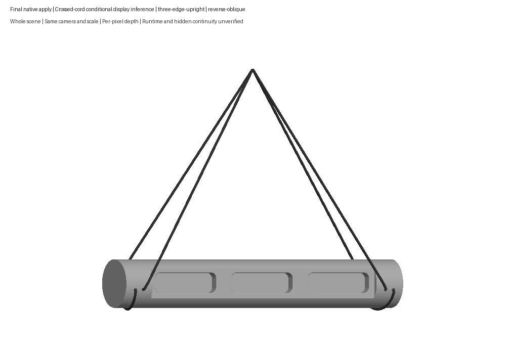
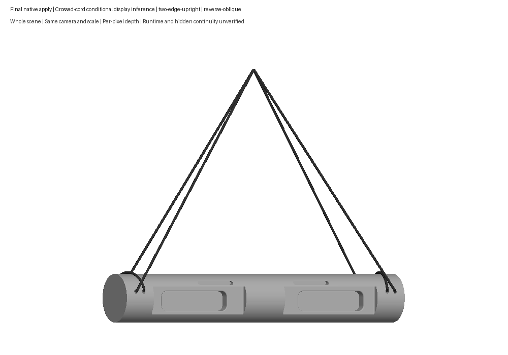
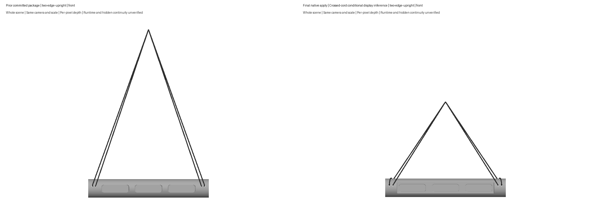
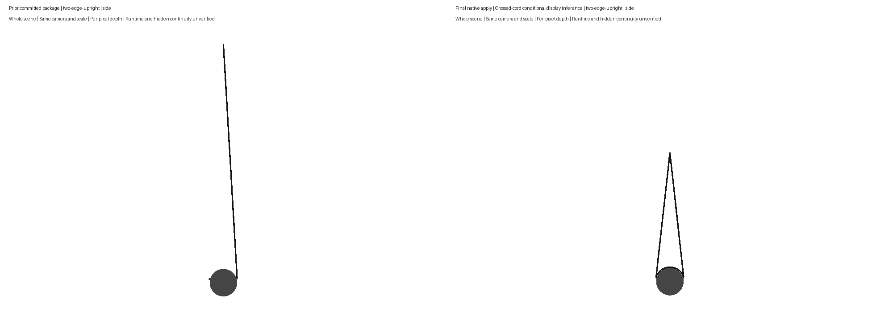
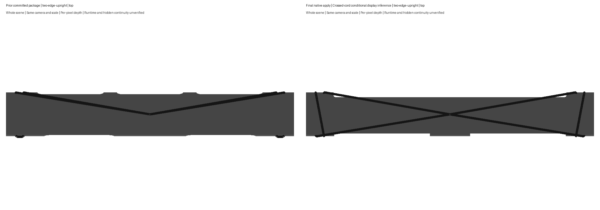

Corrected inferred barrel wraps. Hidden continuity and current app appearance remain unverified. Shown CAD shape and inferred cord accepted on October 2.





Review notes · Validation scope · Opus advice · Artifact hashes
Exact human acceptance and scope. Current runtime remains unverified.